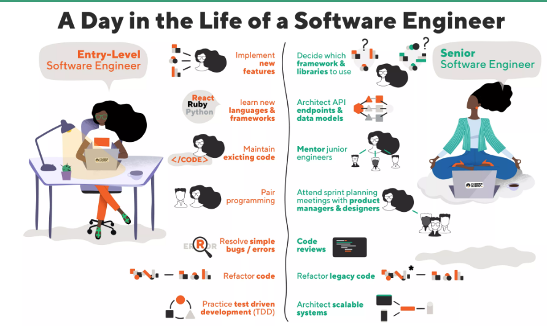

Reflections & Aspirations
Career Aspirations

Ranked #9 Best Tech Job in 2020 by Career Karma: Entry level salaries and job outlooks are higher than average. The Internet is her to stay and the need for qualified will conrinue to grow in the forseeable future.
Ranked #16 Best Tech Job in 2020 by Career Karma: PHP development is one of the most sought after technology jobs, as it is the foundation of WordPress development.
Ranked #4 Best Tech Job in 2020 by Career Karma: Software engineering is one of the most versatile technology jobs on this list. Nearly every industry in the world uses some kind of software, which means the demand for software engineers isn't leaving anytime soon!
Employer Aspirations
Per TechGig employee survey, Google ranked #4 as best Tech Company to Work in the US in 2020. Commenting that Work/life balance, benefits, compensation, autonomy, and the quality of your co-workers are unmatched.
Yardi was ranked #19. I currently work with Yardi in my current role and would love to work with them in a tech capacity one day.Employees comment that this company truly cares about its employees, everything from great benefits and perks to encouraging a wonderful work/life/fun balance.

LinkedIn is ranked #5 and employees comment that they are super invested in employee development, great work/life balance, great benefits for working mothers and maternity/paternity leave, which is near and dear to my heart.
Favorite Topic
My favorite topics were covered in Week 5 & 6 :
Responsive Web design, CSS Grid, Flexbox , Pseudo Selectors and Transitions
Responsive web design is one of the most important skills in web development. There are so many different devices with a wide range of screen sizes and it is a must that your wb pages look good on all of them! CSS Grid and Flexbox help make short work of responsiveness. And the Pseudo selectors and transitions are just cool added features.Biggest Accomplishment
My biggest accomplishment was being able to complete the first 8 weeks, completeing all assignments on time and maintaining a close to perfect grade while being able to work full time and caring for 2 small kids.
Insights
The take aways from this first module are:
- Planning is KEY!
- Sketching out a rough design will save hours of design time and headaches
- It doesn't have to be PERFFECT the first time! (recovering perfectionist in the making).
Each week in this module I gained more knowledge and greater understanding of web development and the chaallenges that come with it. This allowed me to begin narrowing down the specific career path I would like to take and what steps I needed to take to get there. I also became more aware of what strngths and weaknesses. Looking forward to next module and the rest of the program.